CSS has many ways to specify the selector. Five common selector types are:
HTML class names allow CSS rules and JavaScript code to modify all HTML elements belonging to a class. An HTML tag's class attribute specifies the classes to which the tag belongs, with each class name separated by a space. Ex: <span class="highlight first"> has two classes, highlight and first. While HTML elements' IDs are unique, many elements may use the same HTML class name.
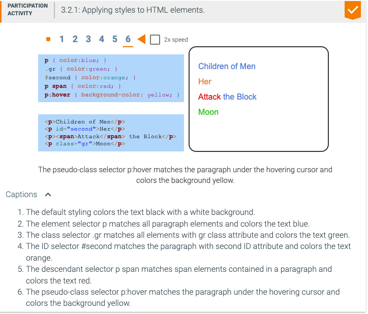
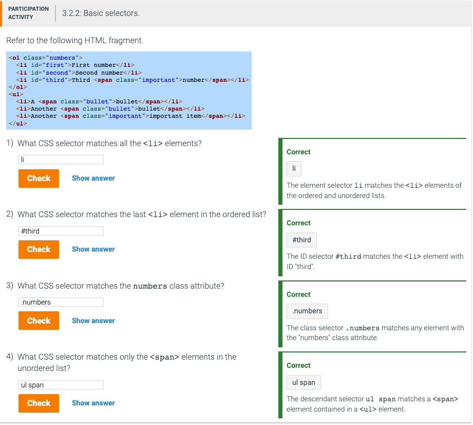
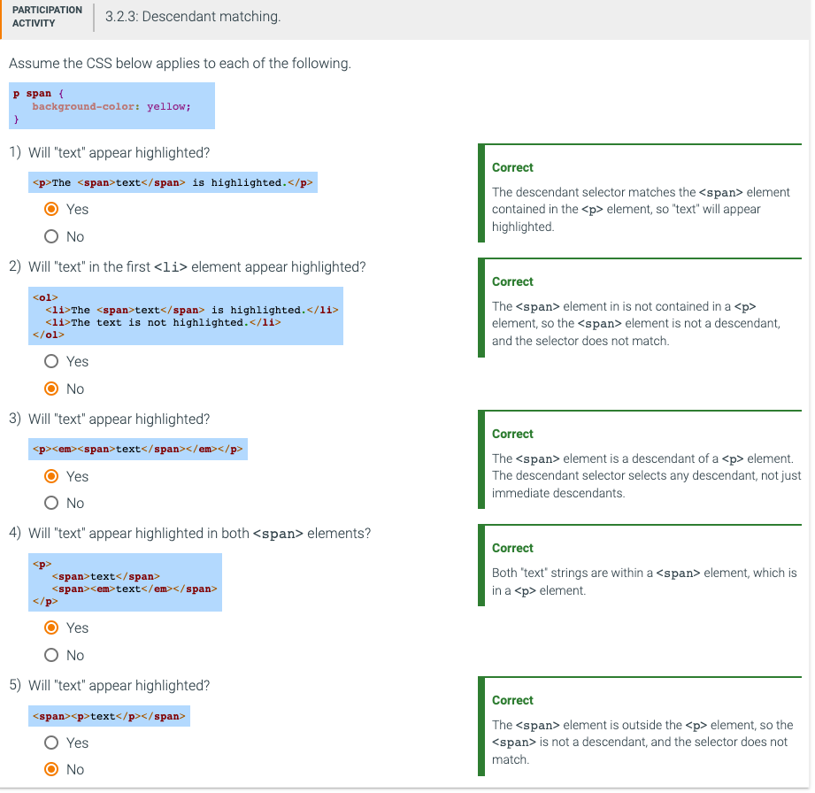
Pseudo-class selectors match elements based on user behavior or metainformation about HTML elements. Example pseudo-class selectors include:
Class selectors and pseudo-class selectors can combine with element names to match more specific elements. Ex: a:hover selects only the anchor tag the mouse is hovering over, and span.highlight selects only span elements that have the highlight class attribute.
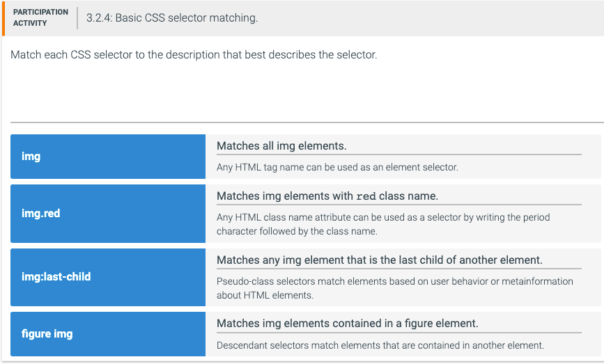
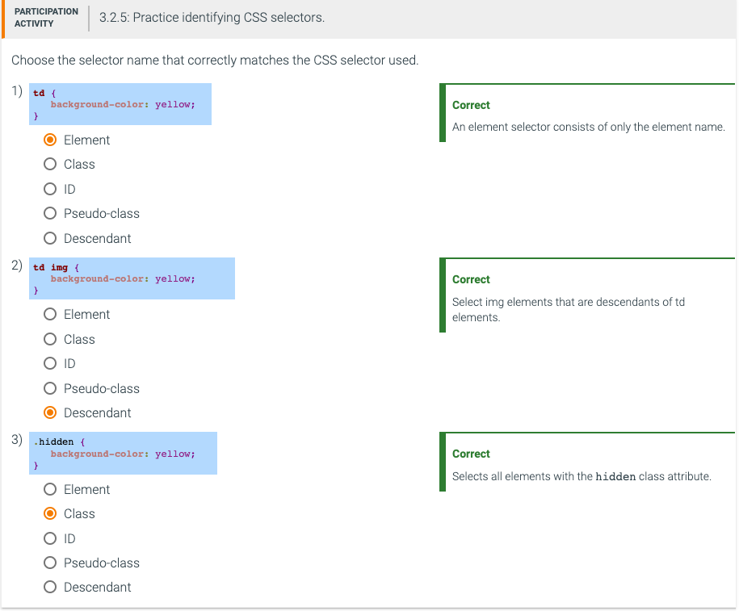
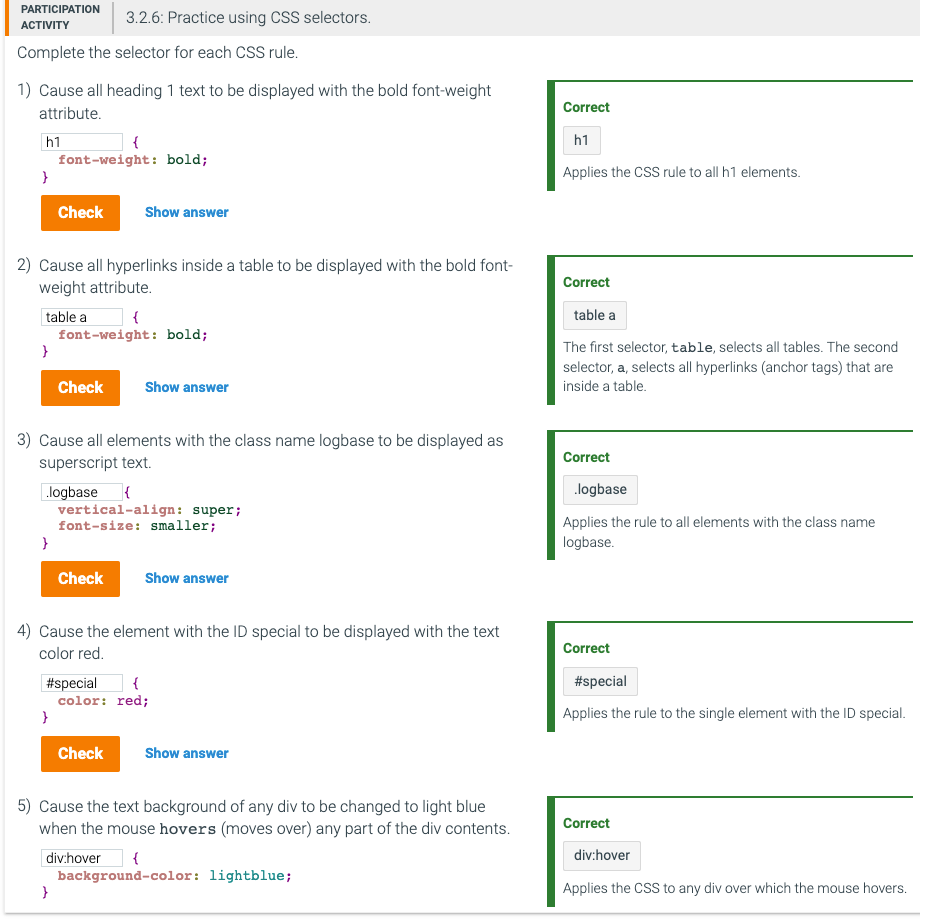
Participation activity 3.2.7 - instruction & before
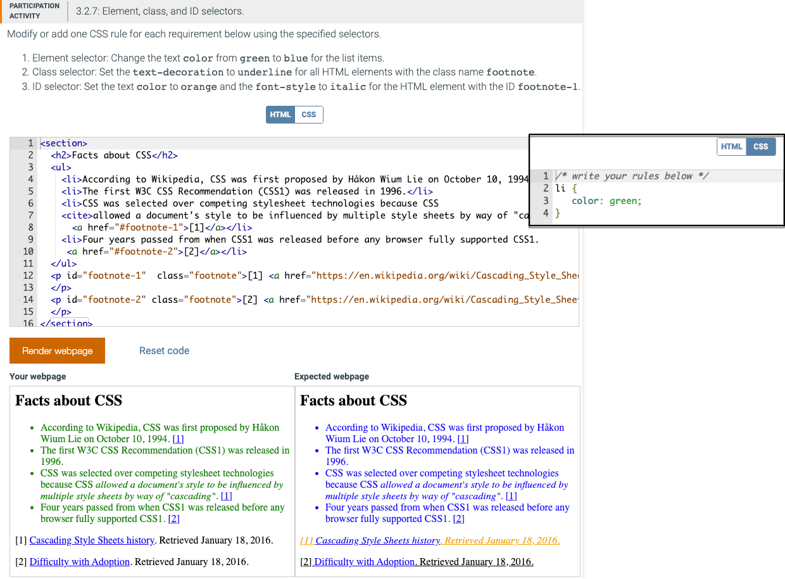
Participation activity 3.2.7 - after adding or modifying CSS
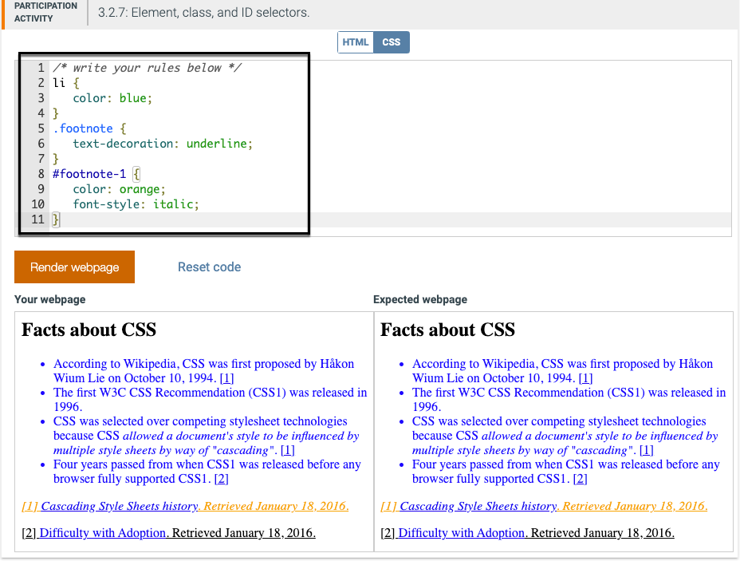
Participation activity 3.2.8 - instruction & before
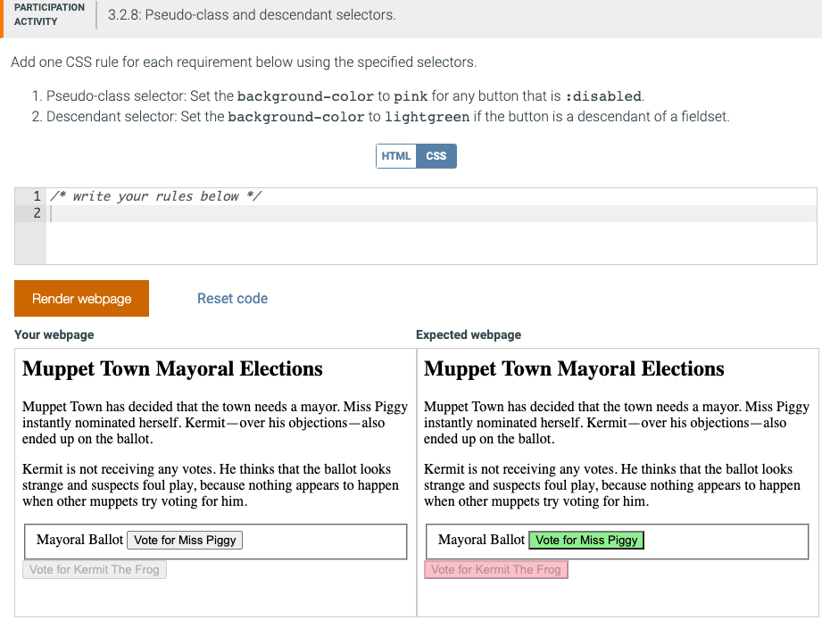
Participation activity 3.2.8 - after adding CSS
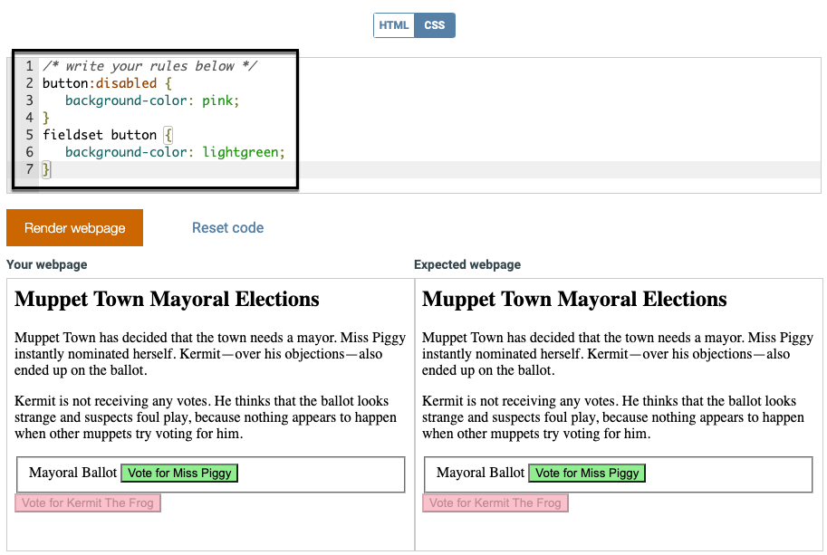
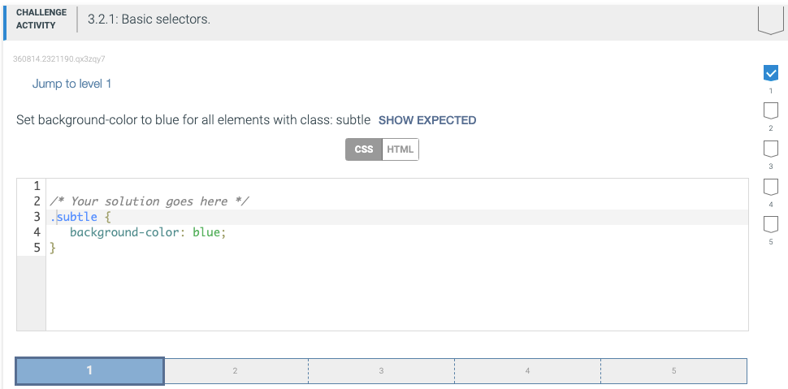
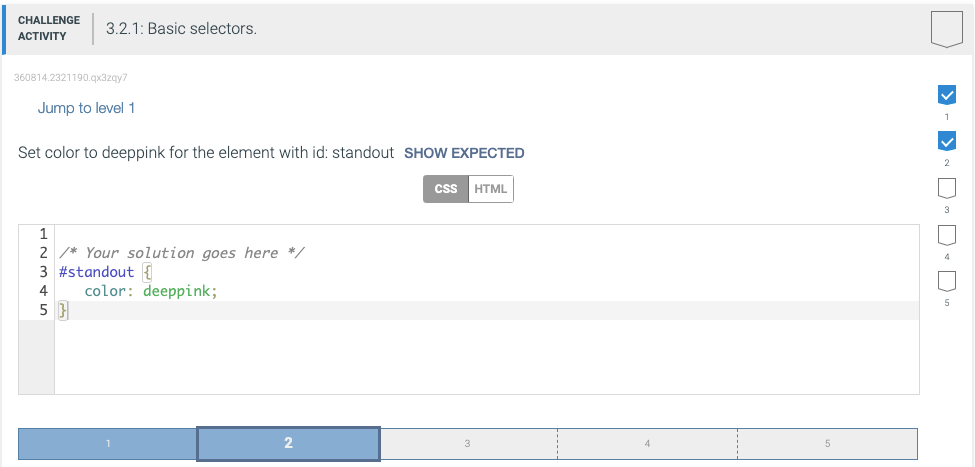
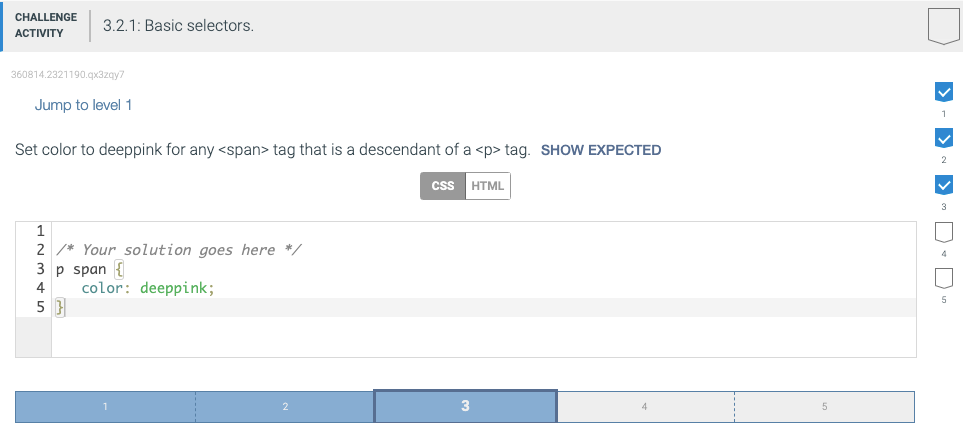
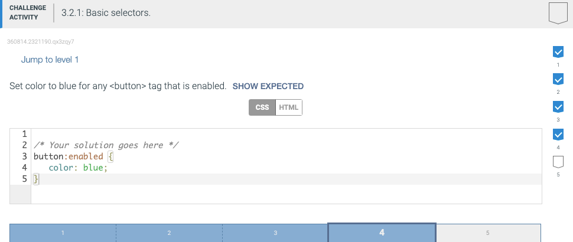
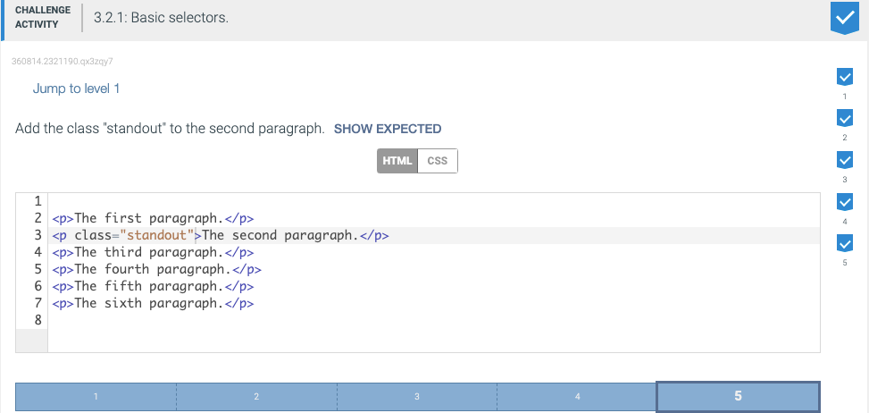